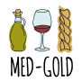
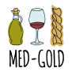
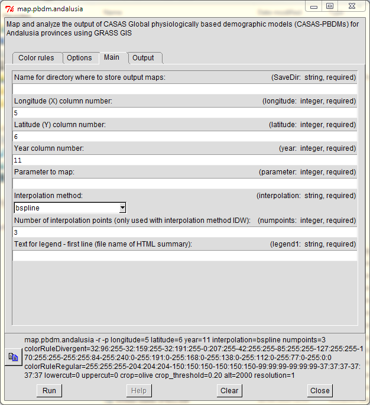

NAME
map.pbdm.colombia - Map and analyze the output of CASAS Global physiologically based demographic models (CASAS-PBDMs) for Colombia departments using GRASS GIS
KEYWORDS
MED-GOLD project, GRASS GIS, physiologically based demographic models (PBDM), olive, agroecosystem analysis, climate services
SYNOPSIS
map.pbdm.colombia
map.pbdm.colombia help
map.pbdm.colombia [-wgelxaducrp] SaveDir=string longitude=integer latitude=integer year=integer parameter=integer interpolation=string numpoints=integer legend1=string [colorRuleDivergent=string] [colorRuleRegular=string] [lowBarCol=float] [upBarCol=float] lowercut=float uppercut=float departments=string[,string,...] crop=string cropthreshold=float alt=float resolution=string [--verbose] [--quiet]
Flags:
- -w
- Modify extent of legend color bar (using low and high input values)
- -g
- Black and white output instead of color
- -e
- Use histogram-equalized color rule
- -l
- Logarithmic scaling
- -x
- Use an overall (compound) range for all maps (absolute max and min)
- -a
- Use also same legend bar for all maps (i.e. bar will extend to overall max and min)
- -d
- Use divergent, zero-centered color pattern (requires positive max and negative min)
- -u
- Use cutting point to mask high values
- -c
- Do not interpolate stations above clipping altitude
- -r
- Write a report with raster statistics
- -p
- Produce bar chart plots summarizing raster statistics
- --verbose
- Verbose module output
- --quiet
- Quiet module output
Parameters:
- SaveDir=string
- Name for directory where to store output maps
- longitude=integer
- Longitude (X) column number
- Default: 4
- latitude=integer
- Latitude (Y) column number
- Default: 5
- year=integer
- Year column number
- Default: 11
- parameter=integer
- Parameter to map
- interpolation=string
- Interpolation method
- Options: idw,bspline
- Default: bspline
- numpoints=integer
- Number of interpolation points (only used with interpolation method IDW)
- Default: 3
- legend1=string
- Text for legend - first line (file name of HTML summary)
- colorRuleDivergent=string
- Select or input a DIVERGENT color pattern (hyphen-separated) using standard GRASS colors (see r.colors manual page for color names) or R:G:B triplets
- Default: 32:96:255-32:159:255-32:191:255-0:207:255-42:255:255-85:255:255-127:255:255-170:255:255-255:255:84-255:240:0-255:191:0-255:168:0-255:138:0-255:112:0-255:77:0-255:0:0
- colorRuleRegular=string
- Select or input a REGULAR color pattern (hyphen-separated) using standard GRASS colors (see r.colors manual page for color names) or R:G:B triplets
- Default: 255:255:255-204:204:204-150:150:150-150:150:150-99:99:99-99:99:99-37:37:37-37:37:37
- lowBarCol=float
- Lower limit for legend color bar when -w option is enabled
- upBarCol=float
- Upper limit for legend color bar when -w option is enabled
- lowercut=float
- Cutting point to mask low values
- Default: 0
- uppercut=float
- Cutting point to mask high values (please, also check option -u Use cutting point to mask high values)
- Default: 0
- departments=string[,string,...]
- Specify multiple departments to map (comma separated). Use the word all to map them all. For departments, use codes defined as follows: CO-NAR=Nariño, CO-PUT=Putumayo, CO-CHO=Chocó, CO-GUA=Guainía, CO-VAU=Vaupés, CO-AMA=Amazonas, CO-LAG=La Guajira, CO-CES=Cesar, CO-NSA=Norte de Santander, CO-ARA=Arauca, CO-BOY=Boyacá, CO-VID=Vichada, CO-CAU=Cauca, CO-VAC=Valle del Cauca, CO-ANT=Antioquia, CO-COR=Córdoba, CO-SUC=Sucre, CO-BOL=Bolívar, CO-ATL=Atlántico, CO-MAG=Magdalena, CO-SAP=San Andrés y Providencia, CO-CAQ=Caquetá, CO-HUI=Huila, CO-GUV=Guaviare, CO-CAL=Caldas, CO-CAS=Casanare, CO-MET=Meta, CO-CUN=Bogota, CO-SAN=Santander, CO-TOL=Tolima, CO-QUI=Quindío, CO-CUN=Cundinamarca, CO-RIS=Risaralda
- Options: all,CO-NAR,CO-PUT,CO-CHO,CO-GUA,CO-VAU,CO-AMA,CO-LAG,CO-CES,CO-NSA,CO-ARA,CO-BOY,CO-VID,CO-CAU,CO-VAC,CO-ANT,CO-COR,CO-SUC,CO-BOL,CO-ATL,CO-MAG,CO-SAP,CO-CAQ,CO-HUI,CO-GUV,CO-CAL,CO-CAS,CO-MET,CO-CUN,CO-SAN,CO-TOL,CO-QUI,CO-CUN,CO-RIS
- Default: all
- crop=string
- Constrain output map to crop growing area. If coffee is used, it is possible to select a threshold for crop harvested area fraction above which mapping will occur.
- Options: coffee,none
- Default: coffee
- cropthreshold=float
- Threshold for crop harvested area fraction above which mapping will occur (output will not be mapped below the threshold)
- Default: 0.01
- alt=float
- Altitude (meters) above which to clip
- Default: 10000
- resolution=string
- Resolution of output figure (single=1, double=2, quad=4)
- Options: 1,2,4
- Default: 1
DESCRIPTION
The map.pbdm.andalusia and description follows.
OPTIONS
Unless the -c switch is used, something will or will not happen.
Here is another paragraph.
If the -s switch is used, something else happens.
Code may also be included and styled:
IFS=,
for opt in $GIS_OPT_INPUT ; do
... "$opt"
done
NOTES
Some particular recommendation follows:
print "Hello world!";
While this will only directly change the Usage section of the help
screen, the option's environmental string may be easily parsed from within
a script. For example, individual comma separated identities for an option
named "input" can be parsed with the following Bash shell code:
IFS=,
for opt in $GIS_OPT_INPUT ; do
... "$opt"
done
A "code related stuff shows like this".
EXAMPLES
Any examples? What follows is a centered image. We may want to show
a series of screenshots for the GUI.

SEE ALSO
map.pbdm.colombia,
AUTHOR
Luigi Ponti
Last changed: 2019-09-29
© 2005-2019 CASAS Global